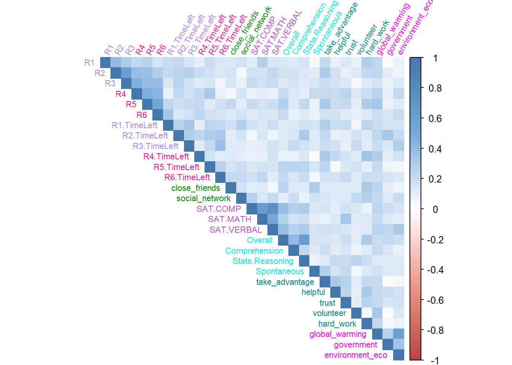
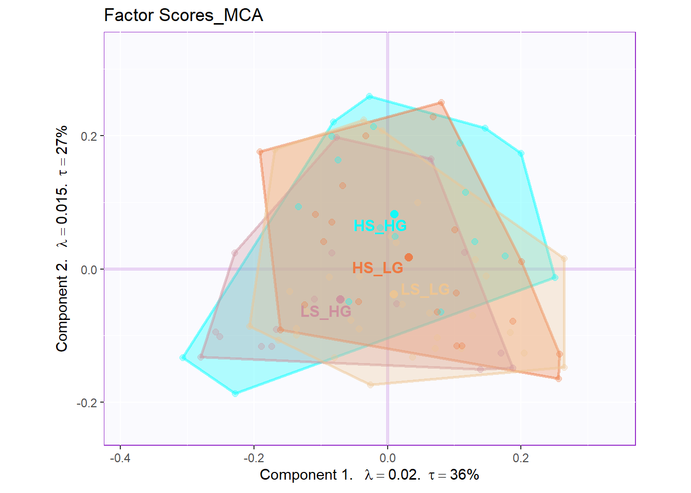
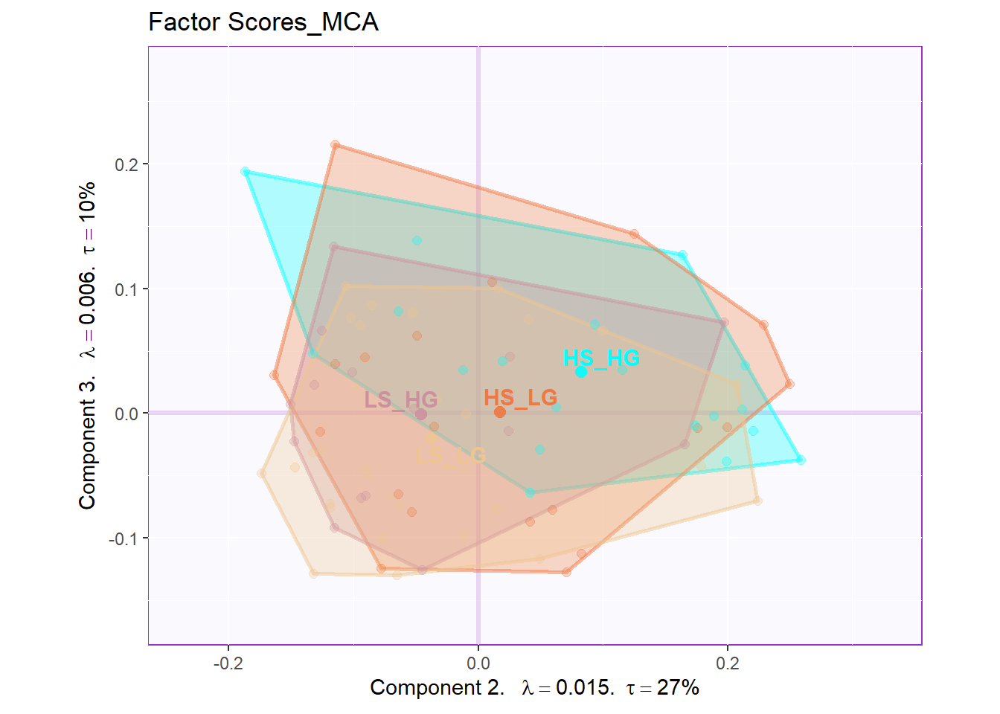
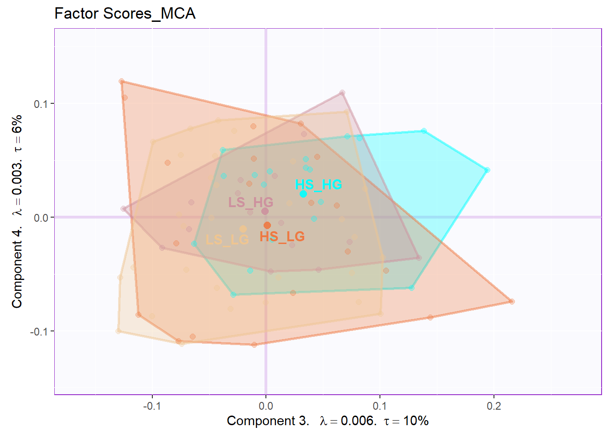
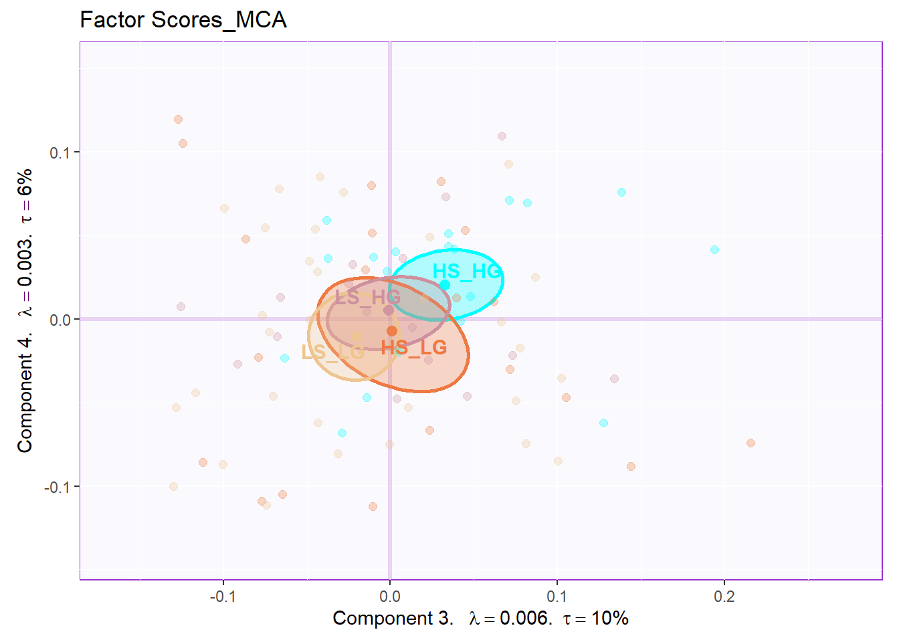
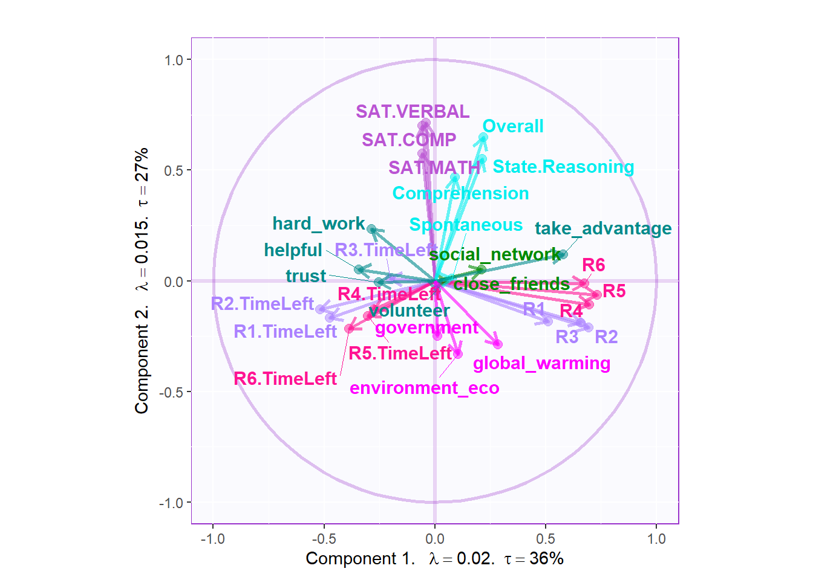
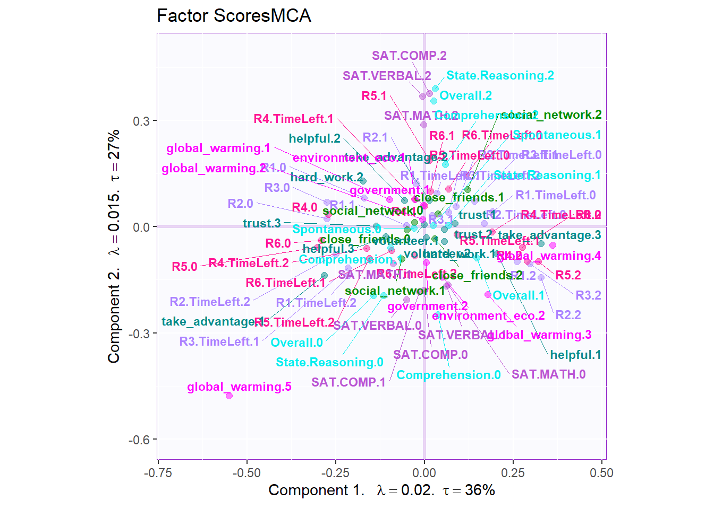
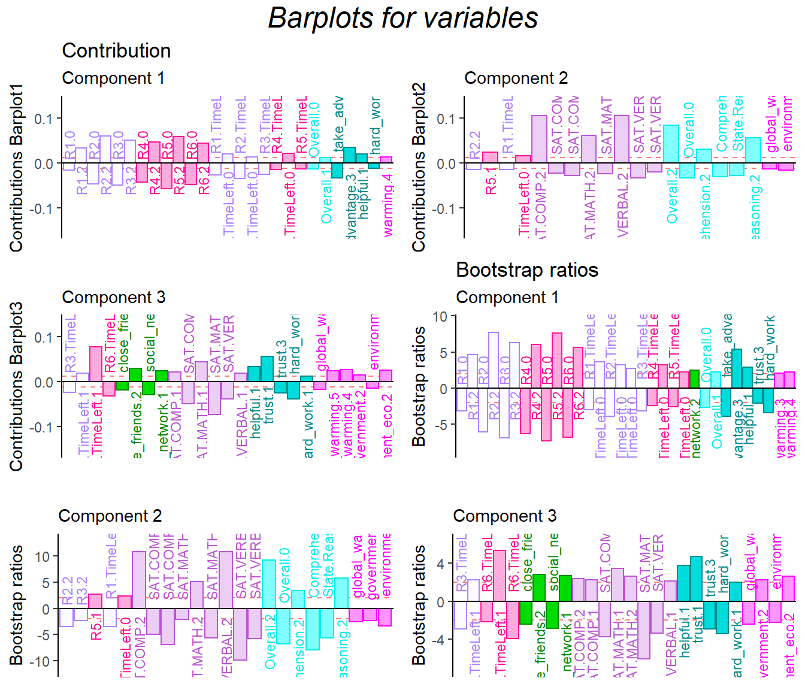

Chapter 8 Multiple Corresponding Analysis
8.1 Introduction of MCA
MCA is an updated version of CA. When I have multiple nominal variable in my data set, it is the perfect time to use MCA. When I am using the MCA on my main data set, the most important thing is to convert my quantitative data table into the nominal ones. I used a handmade function called bins_helper to help me finish this job before hand.
8.2 Histgram of Binning Variables
Annot: The total earning is supplementary variable, so I didn’t bin it.
Figure 8.1: Multiple Histgram of Binning Data
8.3 Computation
Same as usual
# computation
res.MCA <- epMCA(DATA = bins.exp.neg[7:35],
DESIGN = exp.neg$group,
graphs = FALSE)
res.MCA.inf <- epMCA.inference.battery(DATA = bins.exp.neg[7:35],
DESIGN = exp.neg$group,
graphs = FALSE)[1] "It is estimated that your iterations will take 0.03 minutes."
===========================================================================# contribution J
cj <- res.MCA$ExPosition.Data$cj
fj <- res.MCA$ExPosition.Data$fj
fs <- res.MCA$ExPosition.Data$fi
boot.ratios <- res.MCA.inf$Inference.Data$fj.boots$tests$boot.ratios
corrMatBurt.list <- phi2Mat4BurtTable(bins.exp.neg[7:35])
eigs <- res.MCA$ExPosition.Data$eigs
tau <- res.MCA$ExPosition.Data$t
p.eigs <- res.MCA.inf$Inference.Data$components$p.vals
eigs.permu <- res.MCA.inf$Inference.Data$components$eigs.perm
# get some color
col4Levels <- data4PCCAR::coloringLevels(
rownames(fj), m.color.design)
col4Labels <- col4Levels$color4Levels8.4 Heatmap
The correlation heatmap can tell me how close these variables to each other. The clustering trends are observed in collective game, social&general intelligence and attitudes.
# plot color
col <-colorRampPalette(c("#BB4444",
"#EE9988",
"#FFFFFF",
"#77AADD",
"#4477AA"))
# plot
corr4MCA.r <- corrplot::corrplot(
as.matrix(corrMatBurt.list$phi2.mat^(1/2)),
method="color",
col=col(200),
type="upper",
#addCoef.col = "black",
tl.col = m.color.design,
tl.cex = .7,
tl.srt = 60,#Text label color and rotation
#number.cex = .5,
#order = 'FPC',
diag = TRUE # needed to have the color of variables correct
)
8.5 Scree Plot
From the scree plot and permutation test results, we can know that there are several significant components and I can confidently reject null hypothesis.
8.6 Row Factor Scores
From the row factor scores, we can know that there are huge overlap existing among groups in hull. Situation is better when we calcualted the CI. However, it is still not as good as PCA or BADA’s results.




8.7 Important Variables Line Plots

# basic column factor scores
plot.cfs(fj, eigs, tau, d=1, col=col4Labels,
method = "MCA", colrow = "row")
# important variables
varCtr <- data4PCCAR::ctr4Variables(cj)
rownames(m.color.design) <- rownames(varCtr)
var12 <- data4PCCAR::getImportantCtr(ctr = varCtr,
eig = eigs)
importantVar <- var12$importantCtr.1or2
col4ImportantVar <- m.color.design
col4NS <-'gray90'
col4ImportantVar[!importantVar] <- col4NS
col4Levels.imp <- data4PCCAR::coloringLevels(rownames(fj),
col4ImportantVar)
# plot important line plot
labels4MCA <- createxyLabels.gen(x_axis = 1, y_axis = 2,
lambda = eigs,
tau = round(tau))
fj.imp <- createFactorMap(X = fj,
axis1 = 1,
axis2 = 2,
title = "MCA.Important Column Variables",
col.points = col4Levels.imp$color4Levels,
cex = 1,
col.labels = col4Levels.imp$color4Levels,
text.cex = 2,
force = 2)
fj.base <- fj.imp$zeMap + labels4MCA
zeNames <- getVarNames(rownames(fj))
importantsLabels <- zeNames$stripedNames %in%
zeNames$variableNames[importantVar]
fj.imp <- fj[importantsLabels,]
lines4J.imp <- addLines4MCA(fj.imp,
col4Var = col4Levels$color4Variables[which(importantVar)],
size = .5,
linetype = 3,
alpha = .5)
fj.mca <- fj.base + lines4J.imp
fj.mca8.8 Contribution and Bootstrap Ratio Barplots
The contribution barplots are consistent with our previous results that the dimension 1 is dedicated to collective game bahavors.
In the dimension 1, all high level of R1-R3 are corresponding to high level of R4-R6, vice versa. The low level helpful and high-level of taking advantage is related with high level of the game playing. The game playing results are also associated with high level of global attitude.
Dimension 2 is all about the SAT and empathy.
Dimension 3 is showing that high level of helpful and trust are in the same direction with high level of attitude.
plot.cb(cj=cj,
fj=fj,
boot.ratios = boot.ratios,
fig=3,
horizontal = TRUE,
signifOnly = TRUE,
colrow = "row",
col = col4Labels,
fontsize = 3)